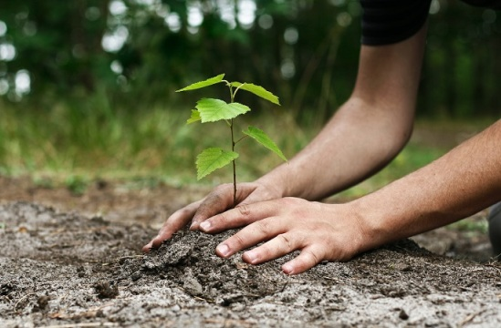
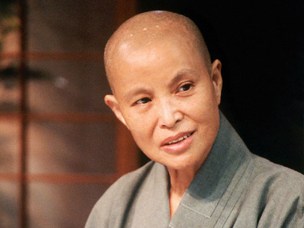

Pada tahun 2023, Indonesia menghasilkan timbunan sampah mencapai 69,7 juta ton per tahun, dengan sekitar 33% tidak terkelola dengan baik, yang sebagian besar mencemari sungai, laut, dan ekosistem. Sampah organik mendominasi dengan 44,5%, diikuti oleh plastik (17%) dan kertas (15%), sementara Indonesia juga menjadi penghasil sampah plastik laut terbesar kedua di dunia, dengan 620 ribu ton plastik berakhir di laut setiap tahunnya. Dampaknya sangat luas, mulai dari pencemaran lingkungan, kerugian ekonomi di sektor pariwisata hingga miliaran rupiah, hingga ancaman kesehatan akibat mikroplastik yang mencemari rantai makanan. Lalu sebagai pelajar, kira-kira kegiatan apa yang bisa kita lakukan untuk menjaga lingkungan kita? Sebagai pelajar, kita dapat menjalankan kegiatan Gerakan Peduli Lingkungan.

Gerakan Peduli Lingkungan merujuk pada upaya bersama yang dilakukan oleh individu, kelompok,
atau komunitas untuk meningkatkan kesadaran, mengurangi dampak negatif terhadap lingkungan, dan menjaga kelestarian alam. Gerakan ini melibatkan
tindakan proaktif dalam melindungi dan merawat lingkungan, baik secara lokal maupun global, untuk memastikan keberlanjutan sumber daya alam dan
kualitas hidup di masa depan. Gerakan ini semakin penting seiring dengan meningkatnya tantangan lingkungan global, seperti perubahan iklim dan kerusakan habitat alami.
GPL juga memeliki beberapa tujuan, yaitu :
1. Mengurangi kerusakan lingkungan
2. Melindungi keanekaragaman hayati
3. Meningkatkan kesadaran masyarakat
4. Mendorong penggunaan sumber daya berkelanjutan
5. Mencegah dan mengurangi perubahan iklim
6. Mendorong gaya hidup ramah lingkungan

Master Cheng Yen, pendiri Tzu Chi Foundation, memulai misinya dalam menjaga lingkungan sebagai bagian dari ajaran Buddhisme yang menekankan kasih sayang dan kepedulian terhadap semua makhluk hidup. Pada tahun 1990-an, beliau mengingatkan pentingnya menjaga bumi sebagai rumah bersama. Tzu Chi, di bawah kepemimpinan Master Cheng Yen , aktif dalam berbagai kegiatan lingkungan seperti daur ulang, penanaman pohon, dan pembersihan pantai. Master Cheng Yen mengajarkan bahwa merawat alam adalah tanggung jawab moral setiap individu, dan ini merupakan bagian dari menjalani kehidupan yang penuh belas kasih. Gerakan ini berkembang menjadi bagian integral dari misi Tzu Chi yang tidak hanya fokus pada bantuan kemanusiaan, tetapi juga pada perlindungan dan kelestarian lingkungan demi masa depan yang lebih baik.

Yayasan Buddha Tzu Chi sangat mendukung kegiatan pelestarian lingkungan dengan mempromosikan berbagai inisiatif seperti daur ulang dan upaya perlindungan alam. Salah satu kegiatan yang dilakukan di lingkungan Sekolah Cinta Kasih Tzu Chi adalah Gerakan Peduli Lingkungan (GPL), di mana setiap hari Selasa dan Jumat, siswa-siswi diimbau untuk membawa sampah yang dapat didaur ulang, seperti botol plastik, kaleng, botol beling, kertas, dan lain-lain. Sampah-sampah tersebut kemudian dipilah oleh unit SD, SMP, SMA, dan SMK secara bergantian. Selain mengajak siswa-siswi untuk membawa sampah daur ulang, Sekolah Cinta Kasih Tzu Chi juga menerapkan langkah-langkah lain untuk mendukung pelestarian lingkungan, yaitu dengan menyediakan tong sampah 3 warna yang masing-masing memiliki fungsi berbeda: kuning untuk sampah organik, hijau untuk sampah daur ulang, dan merah untuk sampah non-organik. Langkah ini bertujuan untuk memudahkan pemilahan sampah sejak awal dan mengurangi jumlah sampah yang tidak bisa didaur ulang. Selain itu, sekolah juga mengimbau kepada anak-anak untuk membawa alat makan sendiri, seperti tempat makan dan botol minum, guna mengurangi penggunaan plastik sekali pakai. Inisiatif-inisiatif ini diharapkan dapat menumbuhkan kebiasaan baik dalam menjaga kebersihan dan peduli terhadap lingkungan di kalangan generasi muda.

"Cara kita berterima kasih dan membalas budi baik bumi adalah dengan tetap bertekad melestarikan lingkungan"
- Master Cheng Yen -